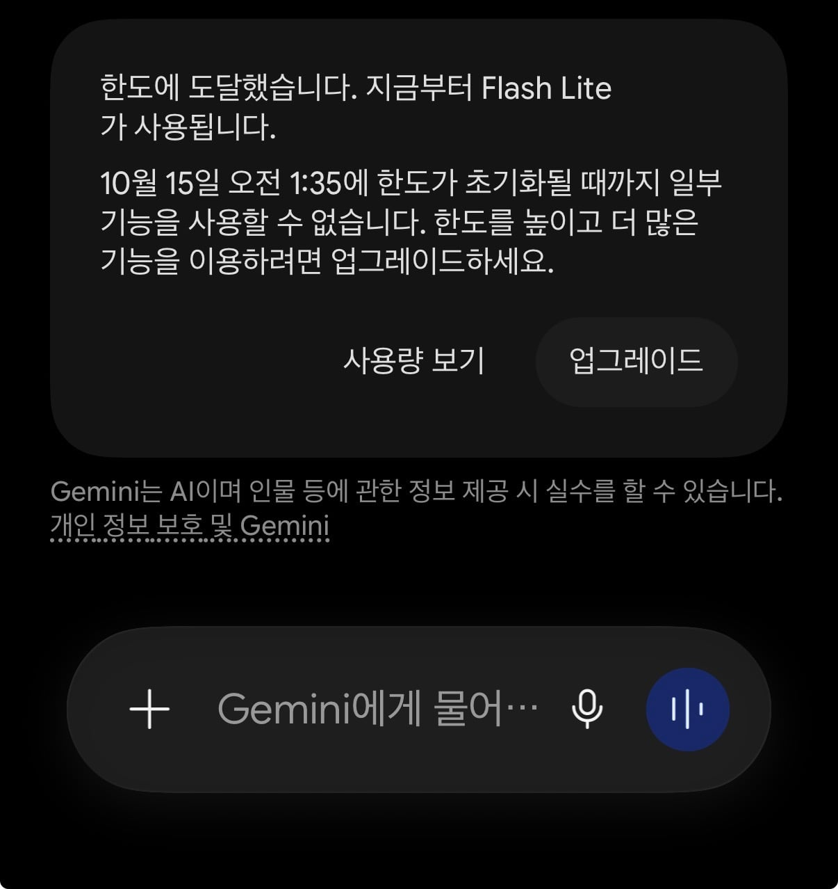
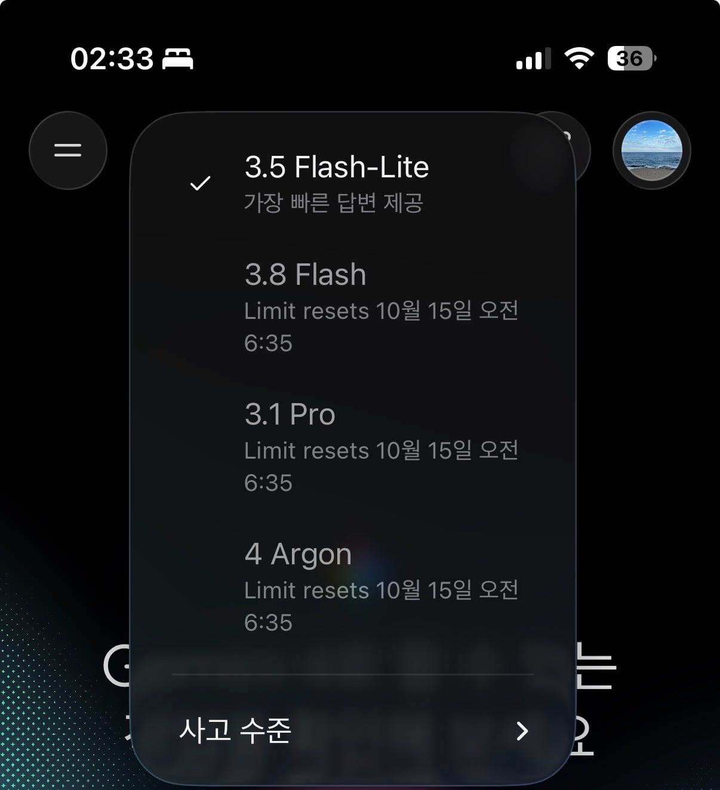

몇번 물어보지도 않았는데 1시간을 못버티냐


몇번 물어보지도 않았는데 1시간을 못버티냐
GPT 써라
클로드 써라
프로유전데도 얼마 쓰지도 못하고 더 쓰려면 12만원인가 내라해서 얼탱 ㅋㅋㅋ
정보 ㄱㅅ 역시 병신이네
조루곤
그래서 지피티로 초고 돌리고 그냥 퇴고할때 딸깍하는용으로 쓰는중 ㅋㅋㅋ
유료 토킹바의 정석! 타임 차지 더 내세요!
"뒤로가기 기능 만들어줘"
GPT는 이제 이미지 첨부하면서 8시간을 써도 괜찮던데
얼마전에 그걸로 친구들사진+내사진 넣고 가챠게임 만듬
공유좀 ㅋㅋㅋㅋㅋ
님이 짜도 ㅈㄴ 쉽게만듬 ㅇㅇ
코드만 입력하고 사진파일 어디로 넣는지만 말하면 다 짜줌
사진파일 이름교체하고 gpt가 만들어준 zip압축해제하고 안에들어있는 이미지 파일만 교체하면됨
잼미니 성능어떰?
소설 쓰거나 뭔가 위로받거나 내 말에 오냐오냐 해주는 걸 원한다면 젬민이가 좋은데 나머진 거의 다 병신.
할루시 존나 많고 수학 사칙연산도 틀리게 함. 따라서 지식 쪽으로는 GPT, 클로드 가야됨
지피티 제미나이 클로드 거처왔는데 도로 지피티 가야되나
심심풀이로 소설쓰고 노는데 이새끼들 좀 쓰다보니 설정 까먹고 문장검수 안해서 클로드까지 왔는데
제미나이가 야설 엄청 잘써주던데
무료버전만 써서 야설 수위도 야설답지 않을듯...
뷰지구멍, 자궁, 애액 뭐 이런 표현 아낌없이 써서 개꼴리게 써주던디.
줄거리를 잘 입력해야 하는듯.
그정도까지 써준다고?
내가 하면 안된다고 찡찡거렸는데
찡찡거려도 길게 눌러서 계속 시도하셈 써줌
딸감 자급자족 보소
무슨 플랜으로 씀? 나도 젬민이로 소설 쓰면서 놀긴하는데 좀 많이 쌓이면 설정 계속 까먹어서 요금제 올릴까말까
고민중이라... 나는 젤 싼 거 쓰고 있음.
난 공짜...
아 공짜면... 일단 답변 고마워. 그리고 예전에 나도 야설 쓰면서 놀았는데 수위에 대한건 무료나 유료나 큰 차이 없더라.
설정 까먹는 문제는 네가 따로 설정집/등장인물들 파일 만들어서 먹여두고
에피소드 끝날 때마다 세션 교체하면됨
새 세션 시작할 때 지금까지의 이야기 먹인 다음 소설 이어가며ㆍ 되고
그거 md로 계속 저장하면서 써야됨 그럼 안까먹음
4는 찐따 본능좀 해결됐음? 제미나이 새끼는 찐따본능때매 사용자 듣기좋은말만 근거없이 씨부려대서 못쓰겠던데
말만 좀 유려해졌지 찐따인건 똑같음 걍 모델성향인듯 ㅅㅂ
문서작업 위주면 GPT가 젤 좋음?
요약 정리는 젬민이도 잘하는데 그 문서 작업이라는게 내가 갖고 있는 소스만 정리하는게 아니라
AI한테 다른 지식 물어서 보강해가면서 해야하는 거면 GPT나 클로드 가야됨.
5시간 쉬고오래
아르곤 소네트5.5랑 토큰값 동일한데? 원래 2만원따리는 프론티어 맛보기임
문서 맥락 정리 정돈 이거엔 쓸만한데 나머진 빡대가리 그 자체
gpt도 6 아스트라 원활하게 쓰려면 17만원짜리 프로 써야됨
이래도 써?
좀 버려라
걍 gpt 써